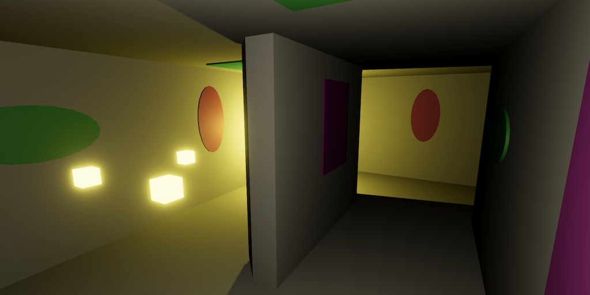
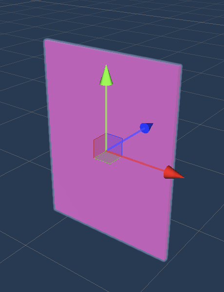
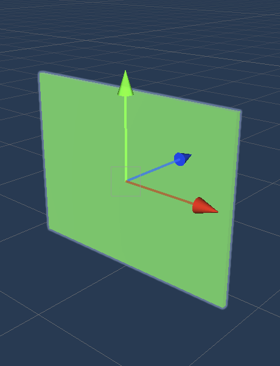
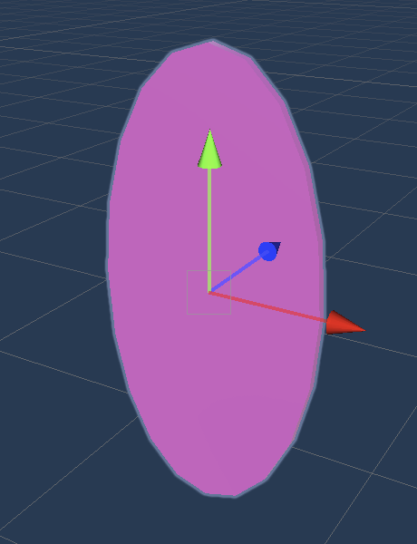
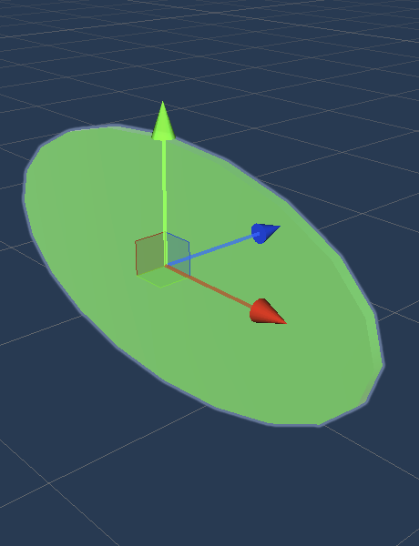
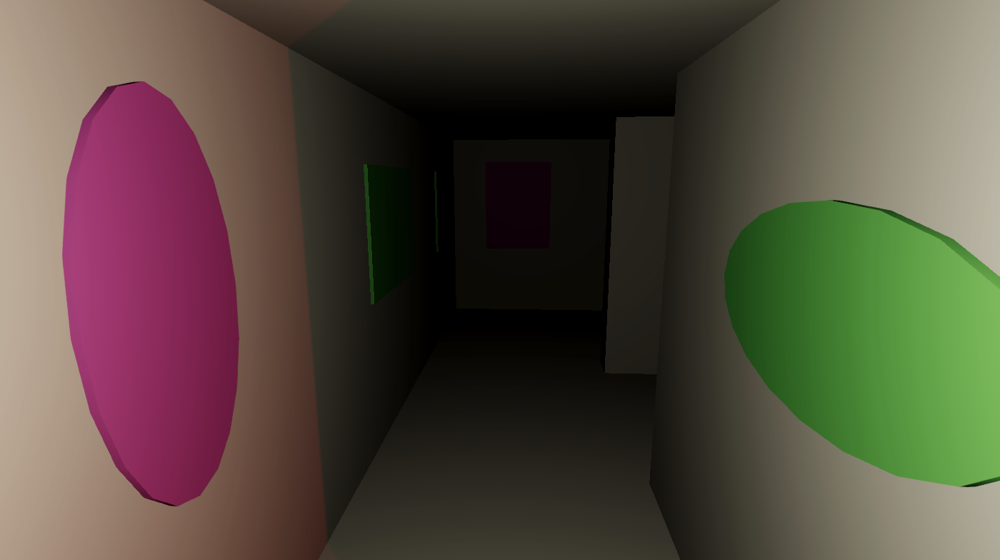
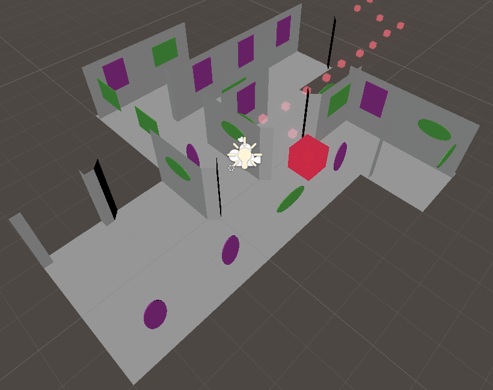
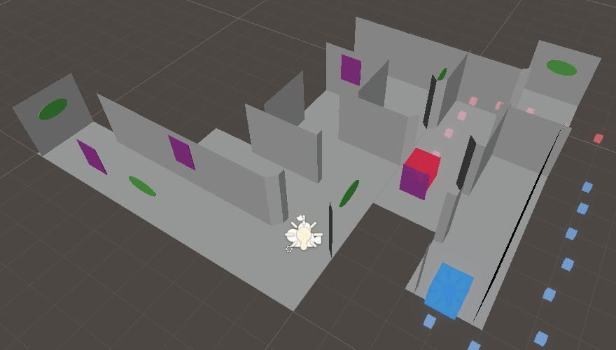
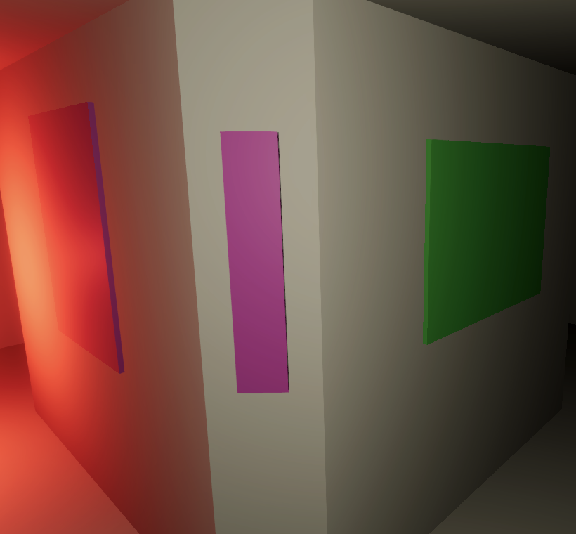
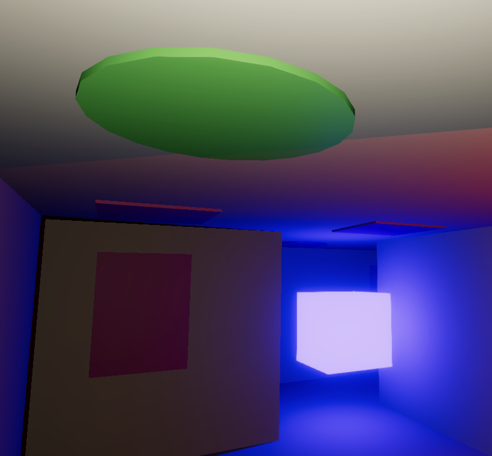

Maze 5.0.0
Cell Ornaments

This tutorial is made with Unity 6000.1.12f1 and follows Maze 4.0.0.
Ornament Prefabs
Last time we upgraded our game's UI. Now we go back to the maze itself, adding ornaments to it. We also upgrade to Unity 6.1 and bump our main version to 5 because of that.
At the moment our maze consists of nothing but featureless white corridors and open areas. Besides being uninspiring to look at, it lacks distinguishing features that could function as landmarks. So it's hard to detect if we're going in circles. We will improve this a bit by adding some ornaments to the maze.
We're going to create a few ornaments that represent paintings hanging on the walls. I'll keep things very simple and just use uniformly colored geometry, calling it modern art.
Duplicate the Wall prefab and move it to a new Prefabs / Parts / Ornaments subfolder. Rename it to Wall Rectangle 1. Add a cube child object to it, with a light magenta material. Set its scale to (0.75, 1, 0.02) and position it at (0, 1.25, 0.74) so it's flush against the wall. Because it's very thin let's remove its collider and turn off shadow casting for it. Finally, delete the wall quad so it's just the ornament.

Duplicate the prefab to make a variant of it, with its X and Y scale components swapped and with a light green material. Then make two more variants with cylinders replacing the cubes, their X rotation set to 90° and their scales set to (0.5, 0.01, 1) and (1, 0.01, 0.5), with appropriate names.



Generating Ornaments
We'll add the ornaments when building a cell. The jobs don't need to know about them. The ornaments will be placed randomly, so to keep them consistent for a fixed maze seed we have to initialize the random state before building the cells in Game.StartNewGame instead of after.
if (seed != 0)
{
Random.InitState(seed);
}
for (int i = 0; i < maze.Length; i++)
{
cellObjects[i] = cellBuilder.BuildCell(maze, i);
}
//if (seed != 0) { … }
Add a configuration array to MazeCellBuilder to define the wall ornaments. Add the four ornament prefabs to the array via the inspector.
[SerializeField] MazeCellObject[] wallOrnaments;
Now create a random ornament after creating the wall in BuildWall. The code is the same as for creating the wall, except that it grabs a random prefab from the wall ornaments array instead of using the wall prefab.
void BuildWall(Transform parent, int rotation)
{
MazeCellObject w = wall.GetInstance();
w.transform.localRotation = rotations[rotation];
w.transform.SetParent(parent, false);
MazeCellObject o = wallOrnaments[
Random.Range€(0, wallOrnaments.Length)].GetInstance();
o.transform.localRotation = rotations[rotation];
o.transform.SetParent(parent, false);
}

An ornament now get added to every wall segment in the maze. To get a better view of the ornaments you can look at the scene window when it's set to Unlit Draw Mode.

These are far too many ornaments. Let's reduce their amount by adding a configurable wall ornament probability, set to 0.4 by default, so only roughly 40% of the wall segments will have an ornament added to them.
[SerializeField, Range(0f, 1f)] float wallOrnamentProbability = 0.4f;
Adjust BuildWall so it only adds an ornament at random with the given probability.
if (Random.value < wallOrnamentProbability)
{
MazeCellObject o = wallOrnaments[
Random.Range(0, wallOrnaments.Length)].GetInstance();
o.transform.localRotation = rotations[rotation];
o.transform.SetParent(parent, false);
}

Ornaments on Cut Corners
Cut corners are another type of wall segment that provide some flat space for us to hang narrow ornaments on. So let's add a configuration array for cut-corner ornaments as well, along with their own probability, set to 0.2 by default.
[SerializeField] MazeCellObject[] cutCornerOrnaments; [SerializeField, Range(0f, 1f)] float cutCornerOrnamentProbability = 0.2f;
Adjust BuilderCorner similar to BuildWall so it also occasionally adds ornaments. Make sure that this is only done when the corner is cut.
void BuildCorner(Transform parent, int rotation, bool cut)
{
MazeCellObject c = (cut ? cornerCut : cornerFull).GetInstance();
c.transform.localRotation = rotations[rotation];
c.transform.SetParent(parent, false);
if (cut && Random.value < cutCornerOrnamentProbability)
{
MazeCellObject o = cutCornerOrnaments[
Random.Range(0, cutCornerOrnaments.Length)].GetInstance();
o.transform.localRotation = rotations[rotation];
o.transform.SetParent(parent, false);
}
}
Create variants of our four existing ornament prefabs for the cut corners. Set the ornament object's position to (0.868, 1.25, 0.868) and its Y rotation to 45°. Because the space is so narrow we make them all tall, not wide. Set the cube scale's to (0.15, 0.75, 0.02) and the cylinder's scale to (0.15, 0.01, 0.5).

Ceiling Ornaments
We wrap up by including some ceiling objects as well. Create another set of four similar prefabs, two squares and two discs, with two color variants each. Their position is (0, 1.99, 0) and their scale is (0.75, 0.02, 0.75), with Y 0.01 for the cyliders.
Add configuration options for the ceiling ornaments, like for cut corners.
[SerializeField] MazeCellObject[] ceilingOrnaments; [SerializeField, Range(0f, 1f)] float ceilingOrnamentProbability = 0.2f;
We don't have a dedicated BuildCeiling method yet, because the required code was only a single line, so create it.
void BuildCeiling(Transform parent)
{
ceiling.GetInstance().transform.SetParent(parent, false);
if (Random.value < ceilingOrnamentProbability)
{
MazeCellObject o = ceilingOrnaments[
Random.Range(0, ceilingOrnaments.Length)].GetInstance();
o.transform.SetParent(parent, false);
}
}
Invoke it in BuildCell.
floor.GetInstance().transform.SetParent(t, false);//ceiling.GetInstance().transform.SetParent(t, false);BuildCeiling(t);

Our maze is now more interesting to look at and it is a bit easier to recognize areas we've already visited before. Of course you could create more and better ornaments, but I keep it simple for the tutorial project.
The next tutorial is Windows.
license repository PDF